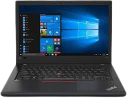
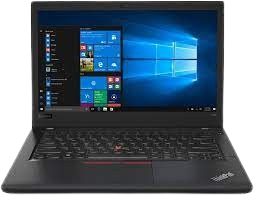

and general value.
and general value.Thinkpads are a brand of computers known for its durabilty, keyboard, t480 keyboard and general value.
Despite their age, older ThinkPad are still being used primariliy as servers, for programming, or daily driving Linux. Notable models include the T480 and X220.
 

X220
T480